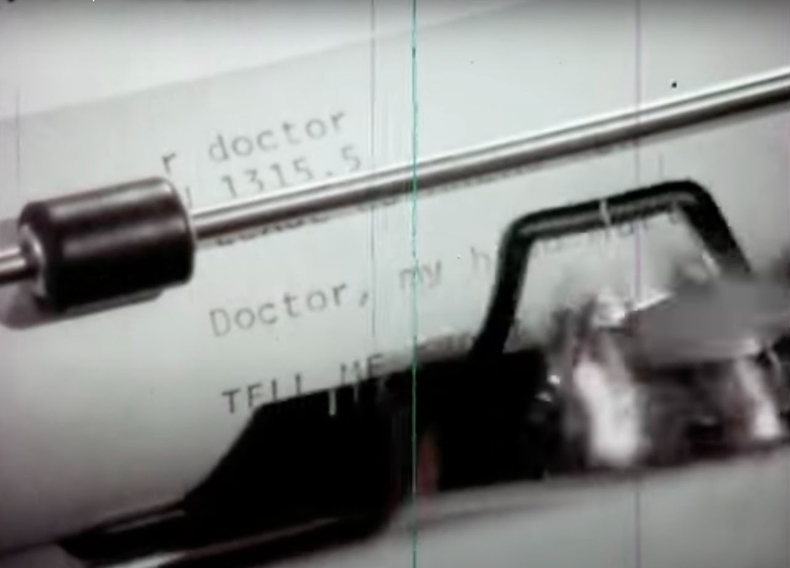

What ELIZA was
ELIZA was the world’s first chatbot: the first program that let a person hold a conversation with a computer in ordinary language. Joseph Weizenbaum wrote it at MIT between roughly 1964 and 1966, on an IBM 7094 running the Compatible Time-Sharing System (CTSS), as part of Project MAC.
A system, not a single program
ELIZA itself is an engine. It reads a script , a list of keywords and transformation rules , and uses it to turn what you type into a reply. DOCTOR, the script that made ELIZA famous, made it answer like a Rogerian psychotherapist: offering little of its own, mostly reflecting your words back as questions. DOCTOR is the most renowned script, but it is only one of many possibilities for the ELIZA system. Read the DOCTOR script ›
How a reply is made
Weizenbaum’s 1966 paper describes the whole mechanism in a few pages. The recovered source shows it working in detail:
- Read the script , load a file of keywords, each with decomposition and reassembly rules.
- Greet , print the opening line (“HOW DO YOU DO. PLEASE TELL ME YOUR PROBLEM”).
- Scan , take the user’s sentence, apply word substitutions, and find the highest-ranked keyword.
- Decompose , match the sentence against that keyword’s patterns, splitting it into numbered parts.
- Reassemble , slot those parts into a reply template, and print it.
- Loop , wait for the next line, and occasionally recall something you said earlier.
Watch these steps run on a phrase of your own ›
ELIZA never understands anything. It rearranges your own words. Weizenbaum was disturbed that people knew this and confided in it anyway. The gap between what the program does and what people believe it does is what he later called, and what we now call, the ELIZA effect.
The machine it ran on
There were no screens. People talked to ELIZA on teletypes, electromechanical printers like the IBM 2741 and the Teletype Model 33, which struck characters onto a roll of paper at ten to fourteen characters a second. The conversation was a physical object: ink on a page, produced together by a person and a machine. Talking to ELIZA on an ASR 33 ›

- The program , the recovered MAD-SLIP source, read closely.
- The versions , at least five ELIZAs between 1965 and 1968.
- Try ELIZA , the genuine 1966 script, running in your browser.